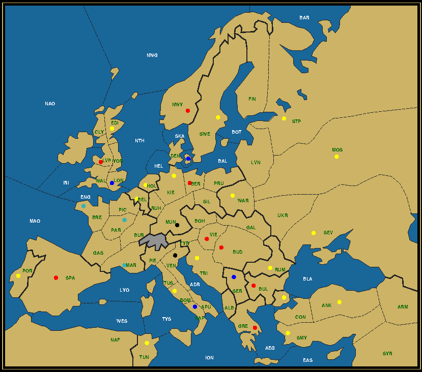

My friend Sherlock Holmes has a talent for deciphering riddles exactly as the creator intended. But sometimes he can be remarkably off the mark. Such was the case when one fine afternoon I entered the premises at Baker Street and was greeted by the rich odor of strong coffee wafting through the entire house. It emanated not from the main living room, but from my old bedroom that Holmes had converted to a laboratory.
When I entered, I saw Holmes standing behind a destillation column, where a transparent liquid ran out into what merely looked like a flower pot made of copper with a long iron handle, coated on the inside with some dark powder. On contact the liquid immediately turned pitch black, after which it started boiling, as the pot was heated on a powerful gas stove.
"Ah, Watson, right on time. Close the door, please, and open a window, or Mrs. Hudson will have a fit."
"Making coffee, are we?" I said jovially. "Or is that some kind of sedating powder you're cooking up?"
"No, it's coffee alright. Or rather kahve, Turkish coffee. This pot here is called a cezve. The powder are the coffee beans ground to dust, so that no filtering is needed. Quite impressive, isn't it? I'm making this for a client who sent me this telegram," he said, taking a piece of paper out of his pocket and handing it over to me. Here's what it said:
I checked the back of the paper, but there was nothing there. "This Sir Tinder is coming on a private business over a cup of coffee. Why then would you serve him Turkish coffee, if he didn't ask for it?"
"Dear Watson, there's more to the telegram than meets the eye. Notice the misspelling of the word 'coffee'. Many foreign languages spell it with an 'a', which makes it plausible that the writer is a foreigner and that he's using a false name. Yet he left us a hint as to his identity."
He checked the contents of the copper vessel, which was developing a thick froth, before continuing. "Look at how the word 'coffee' is broken up. The first two letters are separated, and need to be rejoined to the next part. If we apply the same logic to the signature, what do we get?"
"SRWATICR? SIWATICO?" I spelled out, half stammering and twice as puzzled.
He shook his head in amusement. "You read SR as 'Sir', but it could just as well be 'Senior' or 'Superior'. And as CR is the last word in the telegram, we should go back to the start to find the word to join it with."
"SUWATICROWN? Suwati Crown Affair?!" I exclaimed. "Holmes, are you serious? Is this a message from the Sultan of Suwat?"
"That, we will know in a minute." He turned off the heater and then, holding the end of the long handle, poured the contents of the vessel into two small coffee cups, filling them both to the brim. "That's the door bell. Right on the dot. Can you bring these cups to the living room, while I let our visitor in? But for proper effect, wait for my call before entering the room."
I arranged the cups on a small tray, while I heard Sherlock guiding his guest to the main room. They seemed to keep their voices down, as I could not understand a word they said, until my friend yelled: "Watson!"
I entered the room where the two were seated at the dining table, Sherlock looking directly at me, while the visitor had his back turned on me. Upon my entry he turned around to face me. Were it not for his pitch black eyes and smooth darkened skin, I would have taken him for a member of the English aristocracy. But it was indeed the young Sultan, only a few months on his throne and already back in England.
"Your H…," I started, but he interrupted me.
"Please call me Sir Tinder," he insisted, before wispering: "I'm travelling incognito and the walls might have ears." Then, raising his voice again, he said: "Dr. Watson, you've brought the coffee. Allow me to taste it."
He brought one cup to his nose, sniffed it, then with a questioning expression on his face took a sip.
"But this is a simple kahve!" he exclaimed in disdain. "Mr. Holmes, I had asked for a double café! Café! The French kind. Not the Turkish stock blend."
Holmes looked astonished for a moment, but then regained his composition. I laid the telegram on the table, so that we could look at it anew. "2 CA FFEE, in other words 2 times CA followed by 2 F's and 2 E's. That indeed spells out CAFE CAFE, or a double French coffee. My sincerest apologies."
"Well, you're an Englishman," I said in his defense. "Languages are not our strongest point. Besides, we're more of a tea culture."
But Holmes refused to be excused. "The best riddles, like the best traps, have multiple layers. This time I only saw through one of them and failed to see the other. Whatever punishment there may be, I accept it."
"Well then, Mr. Holmes, you may repay me by helping to solve a riddle of the kind that you are more famed for," Sir Tinder, or the Sultan in disguise, replied. He took another sip before starting his story.
"I was recently in a café in Paris where I enjoyed a most tasteful roast of coffee, called -as you might have guessed- Double French. The lady I was with laughed at the praise that I heaped upon this beverage and said she knew a much finer brand which she would offer if I ever came to visit her. When I asked her for an address, she refused to offer me any, saying that it would not be proper etiquette for a lady to reveal a man her homestead on their first meeting. After promising that we would meet again at the same place, we parted ways.
Unfortunately she did not show up on our next appointment. I was at my fourth straight coffee, when suddenly a boy came in with a letter. He looked around, then came straight to my table. "A letter for you, sir. That will be 50 cents." I gave him 1 franc and he happily took off. I opened the envelope, which scented like the lady I was with the day before, and in it I found a map and a note, written in her exquisite handwriting. There could be no doubt about it. The note said: "For a true Double French, meet me in a fortnight in the restaurant car of the 17:34 train departing from the central station in the city where the first army from Paris has arrived and bound for the same final destination as army London on the accompanying map."
I looked at the map and I was stunned. It was a Diplomacy map, so much was clear. But there were no units on it and the colors of the dots were all over the place. Here, take a look."
He reached inside his jacket for an envelope from which he produced both the letter and the map.

Double French
Click to enlarge in separate window
AUSTRIA (0/8) BER BUD BUL GRE LVP NWY SPA VIE
ENGLAND (0/4) DEN LON NAP SER
FRANCE (0/3) BRE MAR PAR
GERMANY (0/2) MUN VEN
TURKEY (0/17) ANK BEL CON EDI HOL KIE MOS POR ROM RUM SEV SMY STP SWE TRI TUN WAR
"Holmes, you must help me. I … I think I might have fallen madly in love and I could not bear the thought of never seeing her again."
"You have my word I will," Holmes answered reassuringly.

|
Are you able to peel away the layers and solve the riddle? What train should the Sultan take to satisfy his thirst for love and quality drinks?
|
...and for the price of a coffee, here's one more
tip here....